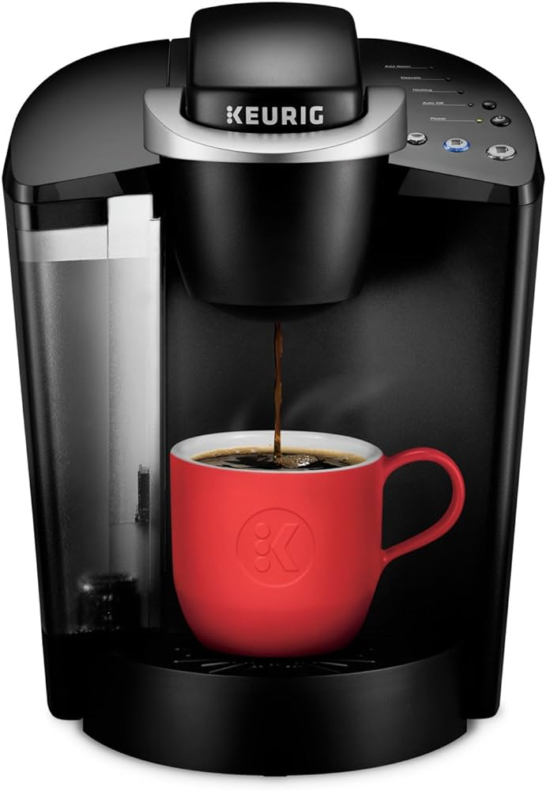

How To Use a Keurig K-Classic Coffee Machine
=
For individuals who have just purchased or have begun using a Keurig K-Classic coffee machine, you might be confused as to how to properly utilize this machine. Using an instant coffee machine can save a lot of time in the morning and money compared to purchasing from a cafe. This set of instructions will show how to work a single-serve coffee machine.
Tools and Materials:
To begin using a Keurig K-Classic Coffee Machine you will need:
- An Keurig K-Classic coffee machine
- A Keurig or K-Cup pod, purchasable at most grocery stores
- Water
- A mug or cup for your beverage
Warning: Coffee dispensing from the machine is between 195 and 205 degrees fahrenheit and hot enough to cause third degree burns.
Instructions:
- Be sure the coffee machine is plugged into the wall.
- Open the water chamber and fill it with between 6 to 10 ounces of water and then close.
- Open the slot for the Keurig Pods and place one in and then close.
- Place a cup or mug underneath the area where the pod went.
- Power on the machine and let it run until it stops making a rumbling sound. This allows it to draw in and heat the water.
- When the buttons start glowing, select the desired amount of coffee you wish to make.
- Wait as the beverage is brewed.
- It is done when no more of the coffee is pouring out of the machine.
- Add cream and sugar if desired. Enjoy your coffee.
Troubleshooting:
- If the machine heats the water but is not brewing the beverage, try adding more water to the water chamber. The issue can be due to not enough water being present.
- Make sure the machine is properly plugged into the wall and powered on.
- If coffee is pouring out of the mug, try picking a button corresponding to a lesser amount.